Smart Hajj Monitor
Sistem klasifikasi risiko kesehatan jemaah haji dan umrah berbasis mobile untuk monitoring kondisi kesehatan secara real-time.
01 — Masalah
Pemantauan masih manual, respons jadi lambat
Di tengah kepadatan massa saat puncak haji, kondisi kesehatan jemaah dapat menurun dengan cepat — heatstroke, dehidrasi, hingga serangan jantung. Namun pencatatan keluhan masih dilakukan secara manual, sehingga petugas kesehatan tidak memiliki gambaran kondisi terkini dan sering terlambat mengetahui siapa yang benar-benar kritis.
Penelitian ini diawali wawancara dengan tiga jemaah haji/umrah dan staf pembimbing di Muhibbah Travel. Temuan utamanya: keluhan kesehatan umumnya disampaikan secara lisan, tidak terdokumentasi, dan tidak ada mekanisme peringatan dini.
Pertanyaan penelitiannya: bagaimana mengubah laporan kesehatan yang bersifat subjektif menjadi tingkat risiko yang terukur, dan menyampaikannya ke petugas sebelum kondisi memburuk?
02 — Solusi
Tiga lapis: input jemaah, klasifikasi, peringatan
Jemaah mengisi
Formulir self-assessment berisi sembilan parameter: usia, jenis kelamin, suhu tubuh, gejala, kondisi umum, riwayat penyakit, dan keluhan lain.
Model mengklasifikasi
Random Forest (100 pohon, max_depth=6) memberi label Rendah, Sedang, atau Tinggi beserta probabilitas dan rekomendasi tindakan.
Petugas menerima
Hasil masuk ke dashboard petugas. Risiko tinggi memicu notifikasi WhatsApp; tombol SOS mengirim koordinat GPS ke peta Pusat Komando.
03 — Arsitektur
Bagaimana sistemnya disusun
Aplikasi Jemaah
Flutter · Provider · GoRouter
Aplikasi Petugas
Flutter · flutter_map · fl_chart
REST API
FastAPI · JWT · SQLAlchemy
/auth— login, Google OAuth, RBAC/assessments— klasifikasi & riwayat/sos— sinyal darurat + koordinat/notifications— peringatan dini
Random Forest
scikit-learn · joblib
MySQL
users · assessments · sos
WhatsApp Gateway
Fonnte API
04 — Antarmuka
Tampilan aplikasi
Aplikasi Jemaah

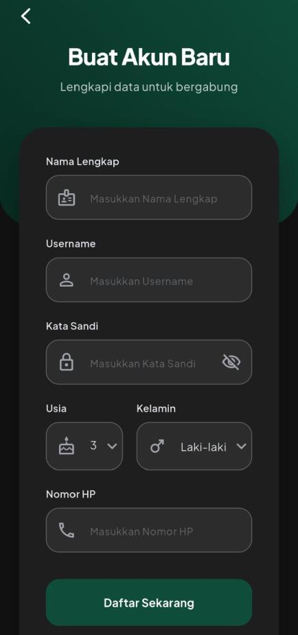
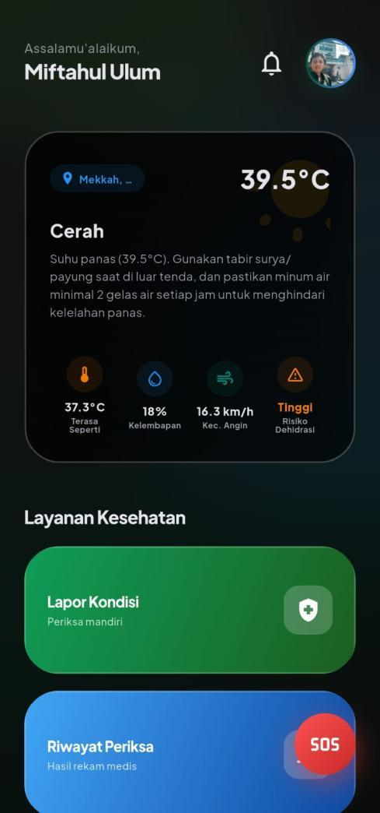
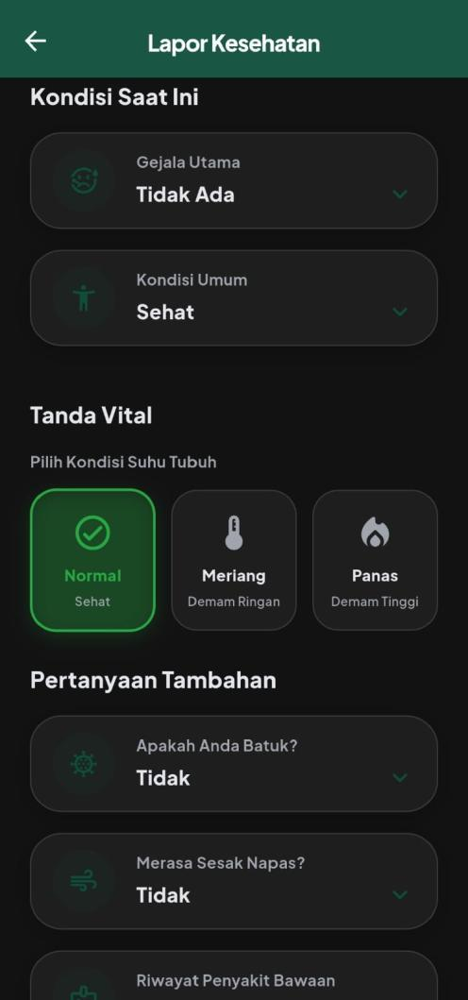
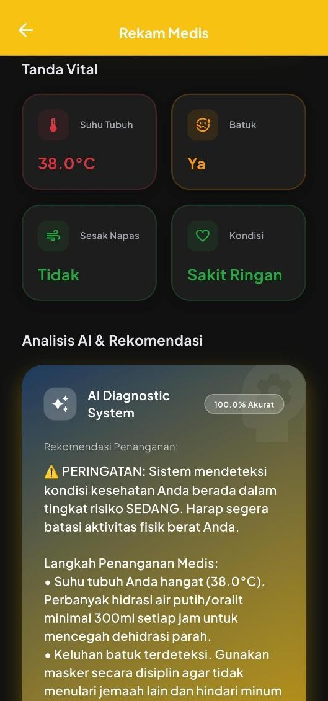
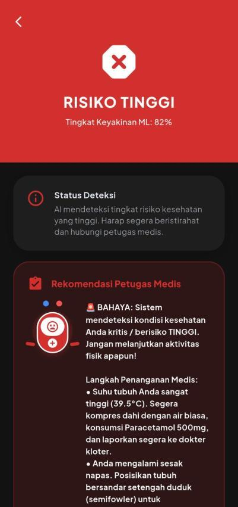
Aplikasi Petugas Kesehatan
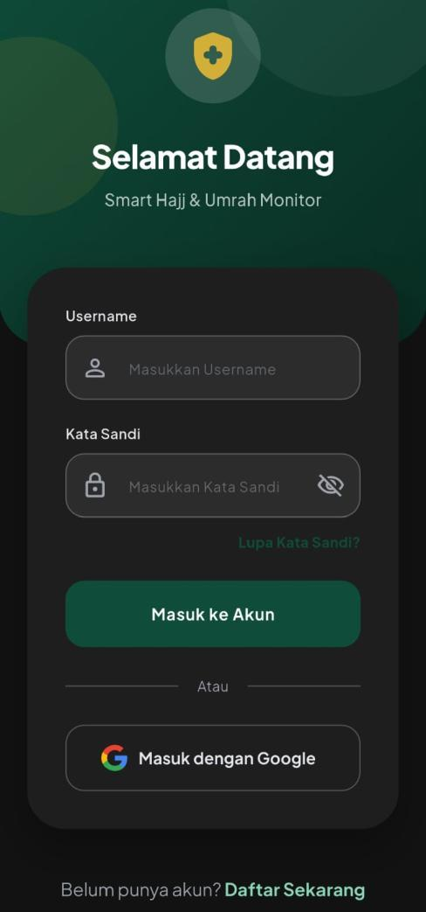
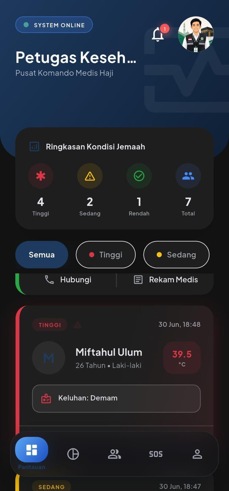
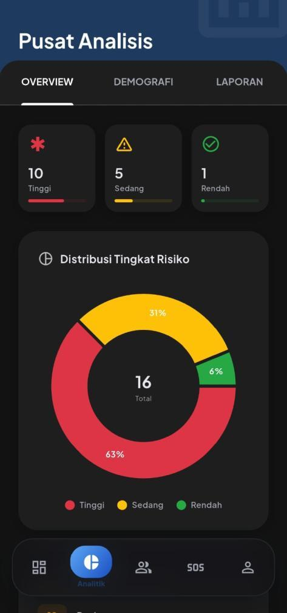
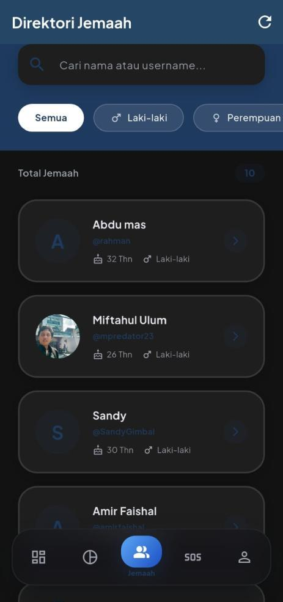
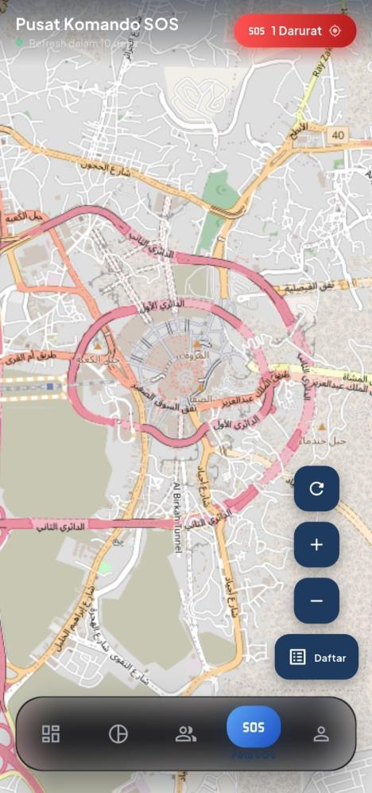
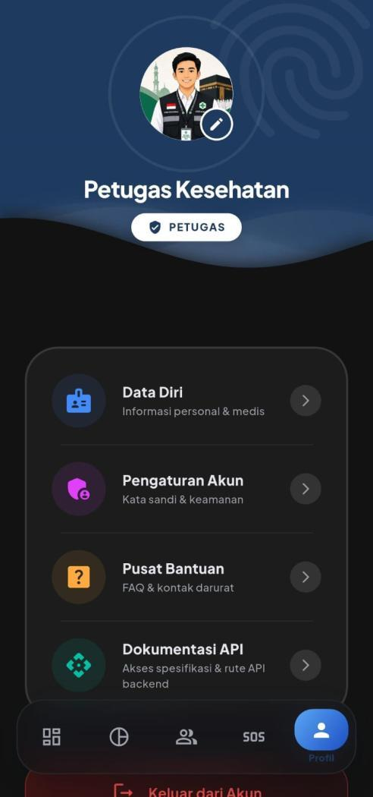
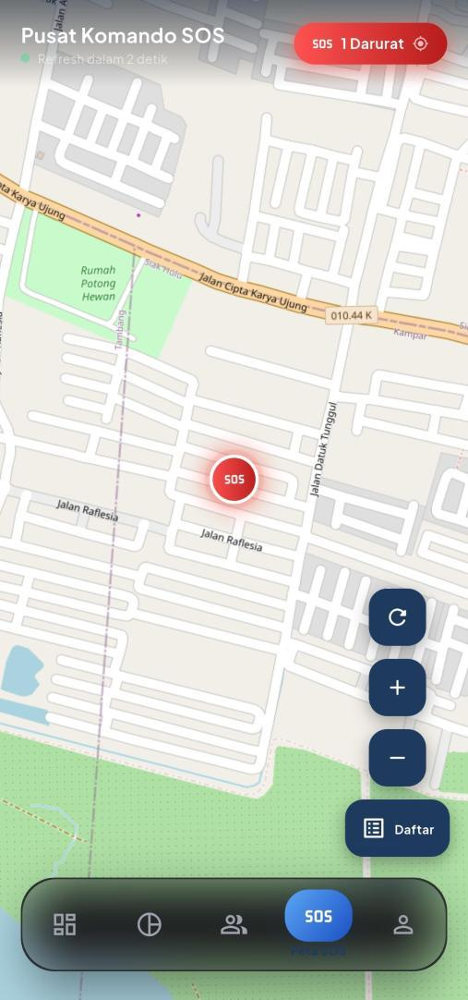
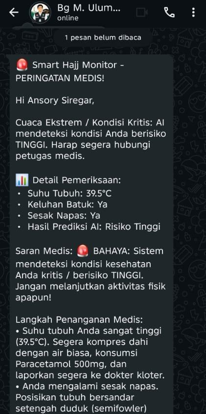
05 — Hasil
Performa model
Diuji pada 200 data uji (20% dari 1.000 record), dengan n_estimators=100
dan max_depth=6.
| Kelas Risiko | Precision | Recall | F1-Score | Support |
|---|---|---|---|---|
| Rendah | 1,00 | 0,40 | 0,57 | 10 |
| Sedang | 0,92 | 1,00 | 0,96 | 104 |
| Tinggi | 1,00 | 0,97 | 0,98 | 86 |
| Akurasi keseluruhan | 95,5% | 200 | ||
Untuk sistem peringatan dini, kesalahan yang paling berbahaya adalah melewatkan jemaah berisiko tinggi. Model mencapai recall 0,97 pada kelas Tinggi — artinya hampir seluruh kasus kritis berhasil terjaring.
06 — Pengujian
Bukan hanya model yang diuji
| Jenis Pengujian | Cakupan | Hasil |
|---|---|---|
| Black Box Testing | Form, klasifikasi, SOS, notifikasi, filter, pencarian | Seluruh fungsi valid |
| UAT — Jemaah | 14 responden (usia 19–70), 7 butir, Skala Likert | 91,8% — Sangat Layak |
| UAT — Petugas | Perwakilan petugas kesehatan, 10 butir | 88,0% — Sangat Layak |
07 — Tantangan
Yang paling sulit dikerjakan
Menyatukan dua disiplin dalam satu aplikasi
Model machine learning dan aplikasi mobile hidup di dua dunia berbeda. Tantangan
terbesarnya bukan melatih model, tapi memastikan format data dari form Flutter
konsisten dengan preprocessor yang dilatih di Python — termasuk urutan kolom
dan encoding kategori. Solusinya: menyimpan ColumnTransformer bersama
model, lalu memvalidasi skema input lewat Pydantic sebelum menyentuh model.
Menjaga pengalaman pengguna untuk jemaah lansia
Responden UAT termuda 19 tahun dan tertua 70 tahun. Formulir harus tetap terbaca tanpa pelatihan: label besar, warna status yang jelas (hijau/kuning/merah), dan rekomendasi tindakan yang ditulis sebagai instruksi konkret — bukan istilah medis.
Membuat alur darurat tetap sederhana
Tombol SOS harus bekerja dalam kondisi panik: satu ketukan, langsung mengirim koordinat, dan titik merah muncul di peta petugas. Alur ini diuji lewat black box testing bersama alur klasifikasi risiko tinggi.
08 — Limitasi
Apa yang belum selesai
- Data simulasi. Dataset dibangkitkan sintetis (1.000 record), bukan rekam medis nyata. Model belum divalidasi secara klinis.
- Ketidakseimbangan kelas. Kelas Rendah hanya memiliki 10 sampel uji sehingga recall-nya 0,40. Perlu SMOTE atau penambahan data.
- Push notification belum aktif. Integrasi Firebase/FCM masih berupa mock; notifikasi berjalan lewat WhatsApp gateway dan notifikasi lokal.
- Skala UAT terbatas. 14 responden jemaah, belum uji lapangan berskala besar.
- GPS belum dioptimasi untuk area kepadatan ekstrem seperti Masjidil Haram atau Arafah.